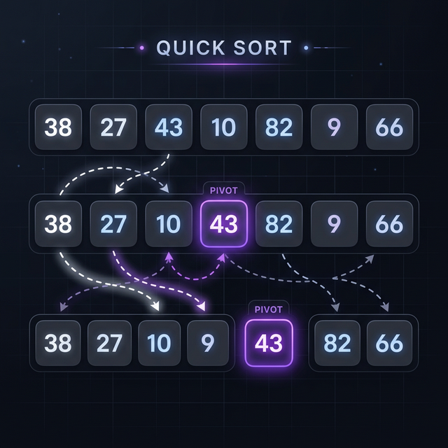

Quick Sort
Quick Sort is an efficient, in-place, divide-and-conquer sorting algorithm. It is usually faster in practice than other O(N log N) algorithms such as Merge Sort when operated on arrays, thanks to its excellent cache locality.
The core of Quick Sort is the "partitioning" step: picking an element as a "pivot" and reordering the array so that all elements smaller than the pivot come before it, and all elements larger come after it.

Complexity
| Best Time | Average Time | Worst Time | Space |
|---|---|---|---|
| O(N log N) | O(N log N) | O(N²) | O(log N) |
How It Works (Step-by-Step)
- Choose an element from the array to be the "pivot" (e.g., the last element, the first, or a random element).
- Partitioning: Reorder the array such that all elements with values less than the pivot come before the pivot, and all elements with values greater than the pivot come after it.
- After partitioning, the pivot is now in its final sorted position.
- Recursively apply the above steps to the sub-array of elements with smaller values and separately to the sub-array of elements with greater values.
- The recursion bottoms out when the array has zero or one element, which are inherently sorted.